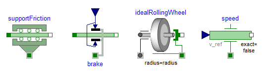
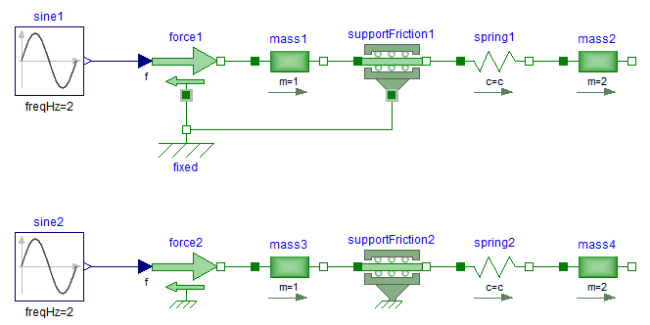

SupportForcesSupport Forces |
|
Information
This information is part of the Modelica Standard Library maintained by the Modelica Association.
The following figure shows examples of components equipped with a support flange (framed flange in the lower center), which can be used to fix components on the ground or on other moving elements or to combine them with force elements. Via Boolean parameter useSupport, the support flange is enabled or disabled. If it is enabled, it must be connected. If it is disabled, it need not be connected.

Depending on the setting of useSupport, the icon of the corresponding component is changing, to either show the support flange or a ground mounting. For example, the two implementations in the following figure give identical results.
